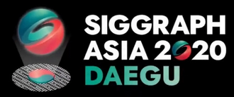
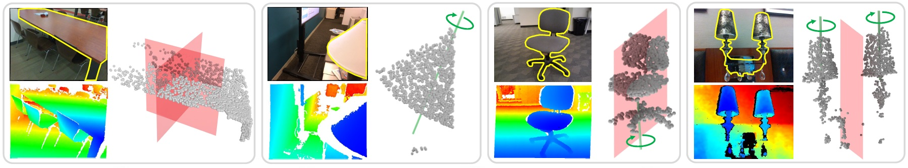
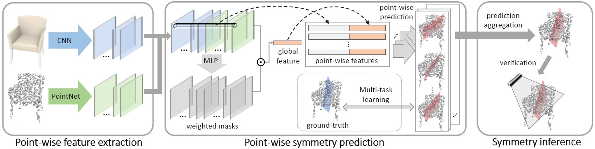
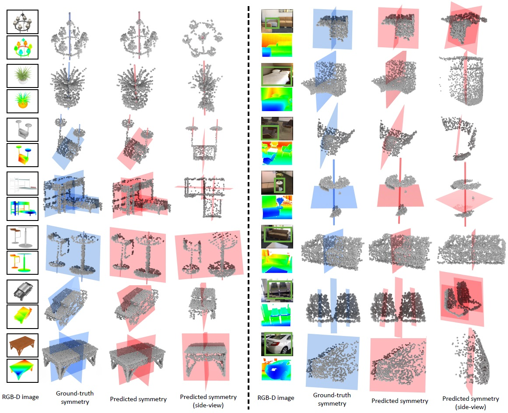
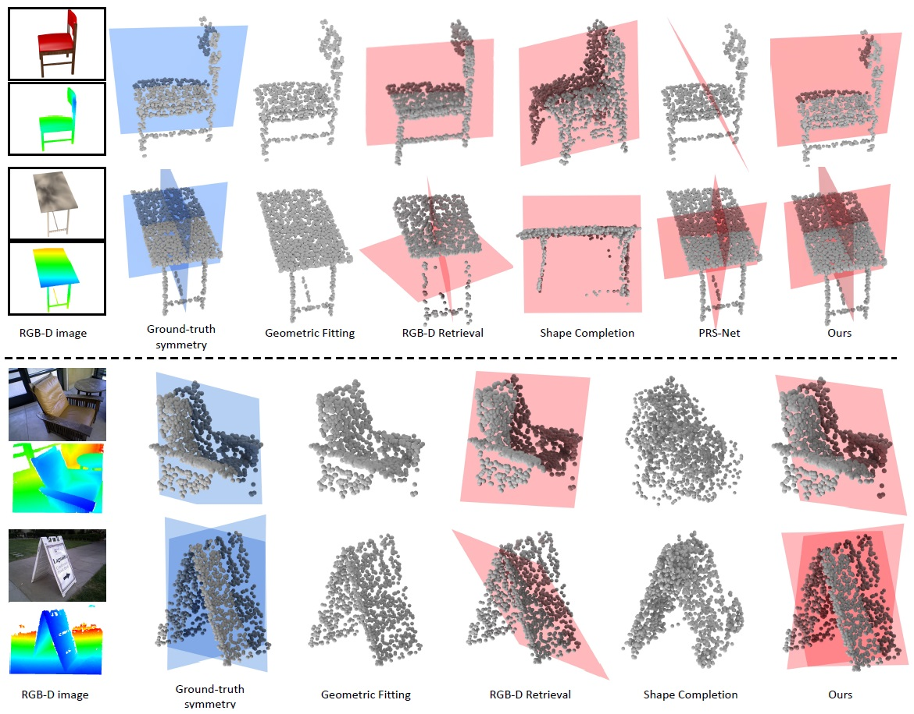

SymmetryNet: Learning to Predict Reflectional and Rotational Symmetries of 3D Shapes from Single-View RGB-D Images
Yifei Shi1, Junwen Huang1, Hongjia Zhang1, Xin Xu1, Szymon Rusinkiewicz2, Kai Xu1
1National University of Defense Technology,
2Princeton University
(Kai Xu is the corresponding author.)
ACM Transactions
on Graphics (SIGGRAPH Asia 2020), 39(6). Conditionally accepted.

We propose an end-to-end deep neural network learned to predict both reflectional and rotational symmetries from single-view RGB-D images. For
each example, we show the input RGB-D images with the object of interest segmented out (see the yellow masks) as well as the detection results over the
unprojected 3D point clouds. Reflectional symmetries are depicted with red planes (reflection plane) and rotational symmetries with green lines (rotation axis).
Note how our method is able to detect the composition of an arbitrary number of symmetries, possibly of different types, present in the same object.
|
Abstract
|
We study the problem of symmetry detection of 3D shapes from single-view
RGB-D images, where severe missing data renders geometric detection approach
infeasible. We propose an end-to-end deep neural network which
is able to predict both reflectional and rotational symmetries of 3D objects
present in the input RGB-D image. Directly training a deep model for symmetry
prediction, however, can quickly run into the issue of overfitting. We
adopt a multi-task learning approach. Aside from symmetry axis prediction,
our network is also trained to predict symmetry correspondences. In
particular, given the 3D points present in the RGB-D image, our network
outputs for each 3D point its symmetric counterpart corresponding to a
specific predicted symmetry. In addition, our network is able to detect for
a given shape multiple symmetries of different types. We also contribute a
benchmark of 3D symmetry detection based on single-view RGB-D images.
Extensive evaluation on the benchmark demonstrates the strong generalization
ability of our method, in terms of high accuracy of both symmetry
axis prediction and counterpart estimation. In particular, our method is
robust in handling unseen object instances with large variation in shape,
multi-symmetry composition, as well as novel object categories.
|
|
|
Paper |
|
|
|
Slides |
|
|
|
| Images |

The pipeline of our proposed symmetry prediction method comprising three major components. Taking an RGB image and a depth image as input,
the network first extract point-wise appearance and geometry feature maps. The features are then used for point-wise symmetry prediction via multi-task
learning. The final symmetry predictions are made with symmetry aggregation and visibility-based verification.

Qualitative symmetry prediction results on ScanNet [Dai et al. 2017] and ShapeNet [Chang et al. 2015]. The first column has two images of the
object, i.e. the input RGB image with the target object marked in green rectangle (upper) and the input depth image (lower). The second column shows the
ground-truth symmetries of the objects. The last two columns visualize the predicted symmetries by our method. Our method is able to handle objects with
all forms of symmetry compositions (reflectional symmetry only, rotational symmetry only and multi-symmetry).

Qualitative comparisons to previous works (Geometric Fitting [Ecins et al. 2018], RGB-D Retrieval, PRS-Net [Gao et al. 2019] and Shape Completion [Li
et al. 2014; Liu et al. 2019].) on both synthetic data and real data. The Geometric Fitting baseline fails to detect any symmetry. The PRS-Net baseline correctly
predicts the number of symmetries but fails to regress the parameters of the symmetries accurately. The RGB-D Retrieval baseline could not predict the
parameters of symmetries correctly. The Shape Completion baseline predicts accurate symmetries for objects with simple geometry, but fails on cases where
the objects are novel or occluded. Our method achieves the best performance on the four examples.
|
|
|
| Thanks |
We thank the anonymous reviewers for their valuable comments.
This work was supported in part by National Key Research and Development Program of China (No. 2018AAA0102200) and NSFC (61572507, 61532003,
61622212) for Kai Xu, and the NSF grant IIS-1815070 for Szymon Rusinkiewicz.
|
|
|
Code
Data |
The full source code with both training and testing dataset will be released soon.
|
|
|
| Bibtex |
@article
{shi_siga20,
title = {SymmetryNet: Learning to Predict Reflectional and Rotational Symmetries of 3D Shapes from Single-View RGB-D Images},
author
= {Yifei Shi and Junwen Huang and Hongjia Zhang and Xin Xu and Szymon Rusinkiewicz and Kai Xu},
journal
= {ACM Transactions on Graphics (SIGGRAPH Asia 2020)},
volume
= {39},
number
= {6},
year
= {2020}
}
|
 
|